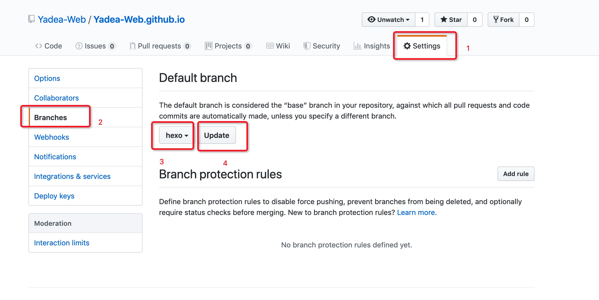

之前创建了一个hexo模板，但源文件没办法备份，更换电脑后之前的文件找不到，相当于之前辛辛苦苦写的文档都丢了。
看到网上说可以创建利用分支来解决这个问题，尝试了一把也踩了不少坑，现在把关键步骤记录下来以备后患。
准备工作
创建github仓库
新建一个
hexo分支设置
hexo为默认分支，如图。
配置SSH Key
步骤
- 先创建一个空文件夹，命名为
github.io（命名随意） - 进入该文件夹下，执行
git clone （你的仓库地址） - 由于我们设置了默认分支，此时clone下来的是
hexo分支的内容。本地分支默认显示为master，我们把本地分支切换到hexo分支去 git checkout hexo切换到hexo分支git branch -v打印当前所有的分支，当前分支颜色为绿色
此时分支问题就弄好了，然后开始新建hexo模板。
在当前文件夹下执行
hexo init sourceHexo，将hexo模板生成到一个子文件夹下。进入
sourceHexo目录下，执行hexo g生成静态文件安装deploy插件，使hexo可以生成后提交到git上
1
npm install hexo-deployer-git --save
打开
_config.yml文件，修改deploy项为：1
2
3
4deploy:
type: git
repository: git@github.com:Yadea-Web/Yadea-Web.github.io.git（你的仓库地址）
branch: masterrepository为你的仓库地址，必须是git开头的，所以准备工作时要配置SSH Key。
设置提交时提交到master分支上。
github.io默认地址打开时为master分支的index.html文件执行
hexo d提交生成的静态文件代码打开你的github.io主页，地址为你的名字+github.io。比如我的仓库地址为
https://github.com/Yadea-Web/Yadea-Web.github.io，那我的博客地址为https://Yadea-Web.github.io，把Yadea-Web那块儿替换成你自己的名字就可以了
到此我们的git就配置好了，文章也可以生成了。
修改文件
配置好以上内容，之后我们新建文章修改文章，都要提交两次。一次是提交hexo为我们生成的静态文件到master分支，供用户访问。另一次是我们自己提交源文件到hexo分支，为自己备份。
hexo提交命令(在
sourceHexo文件夹下执行)1
2hexo g
hexo dgit提交命令(在
github.io文件夹下执行)git add . git commit -m "备份" git push origin hexo
总结
master分支放着hexo为我们生成的静态文件，用户可以直接通过博客地址访问生成好的内容。hexo分支放着我们的源文件和配置信息，更换电脑或者文章找不到时可以git clone hexo分支的内容重新配置，之前的文章也不会丢失。
记得每次提交一定要提交两次啊！！！
踩坑记录
- 执行
git clone后执行hexo init，提示文件夹内有内容，只能在空文件夹里新建。把.git文件夹挪出去后再执行依旧不行，百度了很多说删掉就可以，但我这里就是不行。所以用了创建一个新的文件夹的方式来解决这个问题，hexo init指在当前文件夹下新建hexo库，hexo init XXX指新建一个XXX文件夹，在XXX文件夹下新建hexo库，这样就解决了 git clone下来的默认远程分支为hexo（我们设置的），本地的叫master（默认创建的第一个分支，但代码是hexo分支的），有点混乱，所以切到hexo分支就可以了，别的不需要care
你成功了吗？